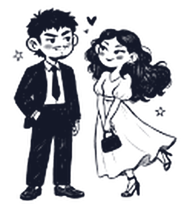

Le Confessionnal
Yousra & Dany · 23 avril 2027
5 minutes maximum · Seuls les mariés verront votre vidéo
Placez-vous dans le cadre et dites « coucou »
On vous entend bien
La caméra est juste au-dessus de l'écran
Regardez la caméra, ça tourne dans…
3REC
Plus que 30 secondes !
Votre message est bien enregistré.
Yousra & Dany le découvriront après le mariage.
Le micro ne répond plus. L'équipe est prévenue, le confessionnal rouvre dans quelques instants.
Aucune vidéo n'est enregistrée pendant la pause.
Le Confessionnal
Le confessionnal fait une pause pendant les discours.
Il rouvre juste après.
Réservé à l'équipe
Saisissez le code à 4 chiffres.
Le Confessionnal
Rappel d'export toutes les heures.
0nouvelles vidéos
à exporter
—
Seules les nouvelles. Quittez l'Accès guidé avant.
Aucune vidéo n'est effacée de l'iPad.
10 secondes, rejouées ici puis supprimées. Rien n'est gardé.
PRÊT
Niveau du son
Seules les nouvelles vidéos sont exportées. Rien n'est effacé de l'iPad.
Touchez « Exporter », puis choisissez « Enregistrer dans Fichiers » › iCloud Drive. iCloud envoie les fichiers dès que l'iPad a du réseau : Safari ne peut pas confirmer cet envoi.